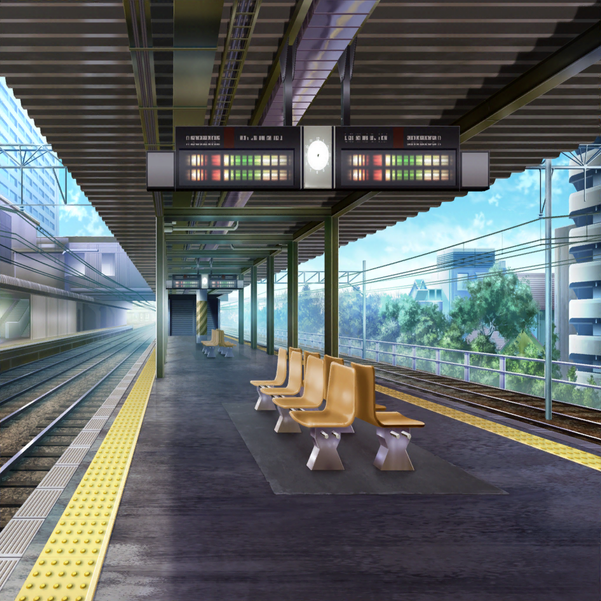
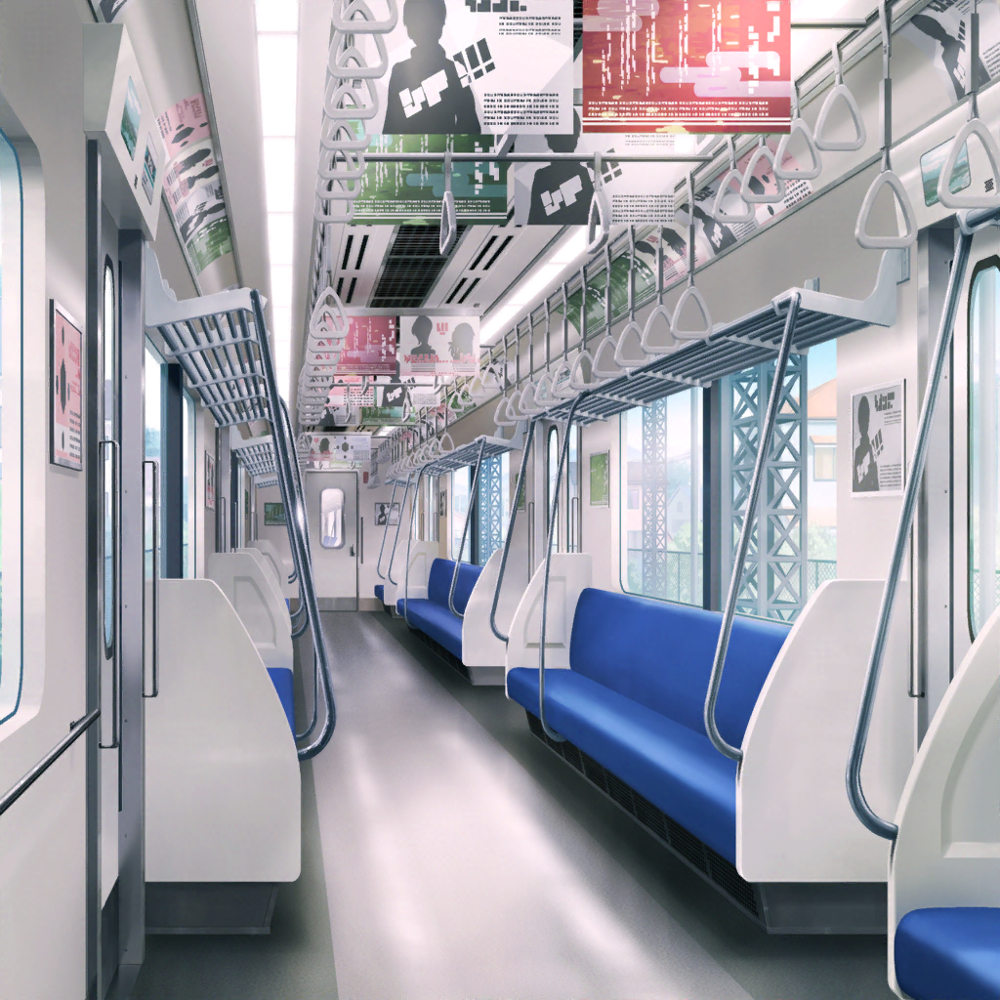

駅のホーム
花音
ごめんね、人混みに流されて前に進めなくて……
千聖
いえ、私ももっと注意するべきだったわ
千聖
でも、電車の時間には間に合ったわね。
もうすぐ電車が来るはずよ
花音
それなら一安心だねっ。
あれ？ でも、このホーム……？
千聖
どうしたの？
花音
私達が乗る電車って、向かいのホームのような気がするけど……？
千聖
え？ でも私達が乗る電車と
同じ色のマークが案内板に描いてあるわよ？
花音
うん、でも……向かいのホームにも同じマークがあるよ？
千聖
えっ！？
花音
たぶん、上りと下りでホームが違うんだよ。
案内板の行き先、私達が行く方と逆方向だし
千聖
そ、そういうものなの？
知らなかったわ……
千聖
あっ、向かいのホームに急ぎましょう！
すぐに電車が来るわ！
花音
う、うん！
美咲
あー、花音さん達、めっちゃダッシュしてる……
薫
まさか、向かいのホームに行ってしまうとは。
フフ、千聖も花音も人を驚かせるのが上手だね
美咲
笑いごとじゃないってば。
危うく真逆の電車に乗るところだったよ
彩
……あれ？ 美咲ちゃんと薫さん？
美咲
えっ？ あっ、彩先輩！？
彩
わあ、こんなところで会うなんてすごい偶然だね！
薫
ああ、こんなに子猫ちゃんに出会えるなんて、
今日は子猫ちゃんの日だね
美咲
なんの日なの、それ……？
ていうか、彩先輩のその格好……
彩
えへへ、変装してみたんだ〜！
彩
人が多いお店に行くから、目立たないようにしようと思って。
ほら、私も一応、テレビとか雑誌に出たりしてるし……！
美咲
そっか。変装しないと芸能人だってバレちゃいますもんね
薫
その気持ちはよくわかるよ。スターの宿命だね
美咲
でも、逆に目立ってるような気もするけど……
薫
それで、お忍びでどこへ行くところなんだい？
彩
うん、２駅先にできた新しいカフェに行くところなんだ♪
彩
３Dラテアートが話題のお店って聞いたから、
SNS映えする写真が撮れるかなぁって思って！
美咲
それってもしかして、
花音さんと白鷺先輩が行こうとしてるところじゃ……？
彩
花音ちゃんと千聖ちゃん？
えっと、なんの話……？
薫
……つまり、そういうことさ
彩
そ、そっか、花音ちゃんちょっと心配だもんね。
でも、千聖ちゃんがそんなに電車が苦手なんて知らなかったよ
薫
人には誰しも、人には話せない秘密があるものさ
彩
……ねぇ、私も薫さん達と一緒についていってもいいかな？
美咲
え？
彩
みんな、２駅先のカフェを目指してるんだよね？
彩
それなら行き先は一緒だし、
尾行なんてなんだか探偵みたいで面白そうだし！
美咲
あたし達はいいですけど、花音さん達の
ペースに合わせるとお店に着くのが遅くなる可能性が……
彩
あっ、電車来たみたいだよっ♪
美咲
あ、乗るのは待ってください。
花音さん達はまだこっちのホームに来てないし、それに……
薫
美咲！ あれを……千聖達が走ってる！
美咲
ええっ！？
彩
あんなに走ってる千聖ちゃん、初めて見た……
薫
この電車に乗るつもりらしいね。
よし、私達も急いで乗り込もう！
美咲
えっ！？ ちょっ、だからこの電車は……
ああもう、待ってってば〜！

電車
千聖
はあ……はあ……
なんとか間に合ったわね……
花音
うん……
はあ……はあ……
花音
こんなに走るなんて思わなかったけど、
これで２駅先まで行けそうだね……
千聖
ええ、ちゃんと『各駅停車』に乗れたもの
千聖
ずっと敬遠していたけど、落ち着いて
利用すれば電車もそう難しいものじゃ……えっ！？
花音
ど、どうしたの？
千聖
あそこのモニターって、この電車情報が出ているのよね？
花音
うん、この電車の行き先や次の停車駅が出るモニターだよ
千聖
そこに『急行』って表示が出てるんだけど……
花音
え……？
ど、どうして〜〜？？